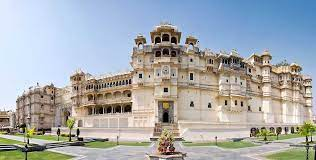
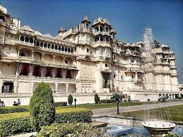
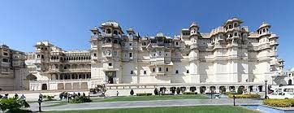
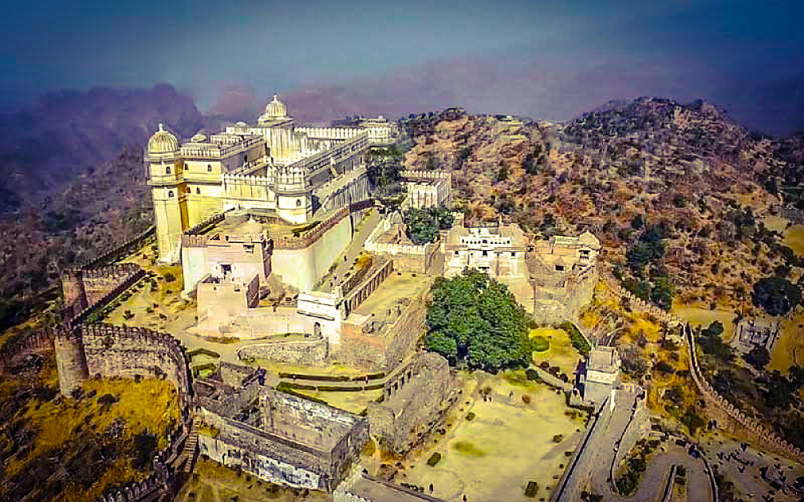
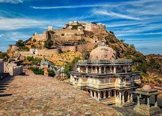
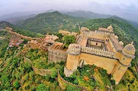
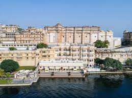
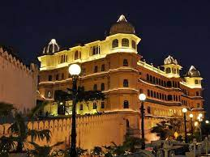

Udaipur Palaces
1. City palaces:



One of the best architectural marvels in the state of Rajasthan, the City Palace in Udaipur is located on the banks of Lake Pichola. The grand white City Palace is a heritage building and it showcases the best elements of Rajput Culture and arts.
2. Kumbhalgarh Fort:



Kumbhalgarh Fort is a Mewar fortification on the westerly range of Aravalli Hills, in the Rajsamand District of Rajasthan in western India. It is known and popular as a World Heritage Site included in Hill Forts of Rajasthan. Occupied until the late 19th century, the fort is now open to the public and is spectacularly lit for a light show each evening.
3. Fatech Prakash Palace:


This palace of Udaipur takes Rajput grandeur to a new level. The architecture is splendid, and the layout fantastic. There are a number of corridors and a rich display of Rajasthani paintings, the presence of a large variety of crystal artefacts also indicates the King's love for it. Now, a large part of the fort has been converted into a museum and the royal crystal items take up a large part of the display.